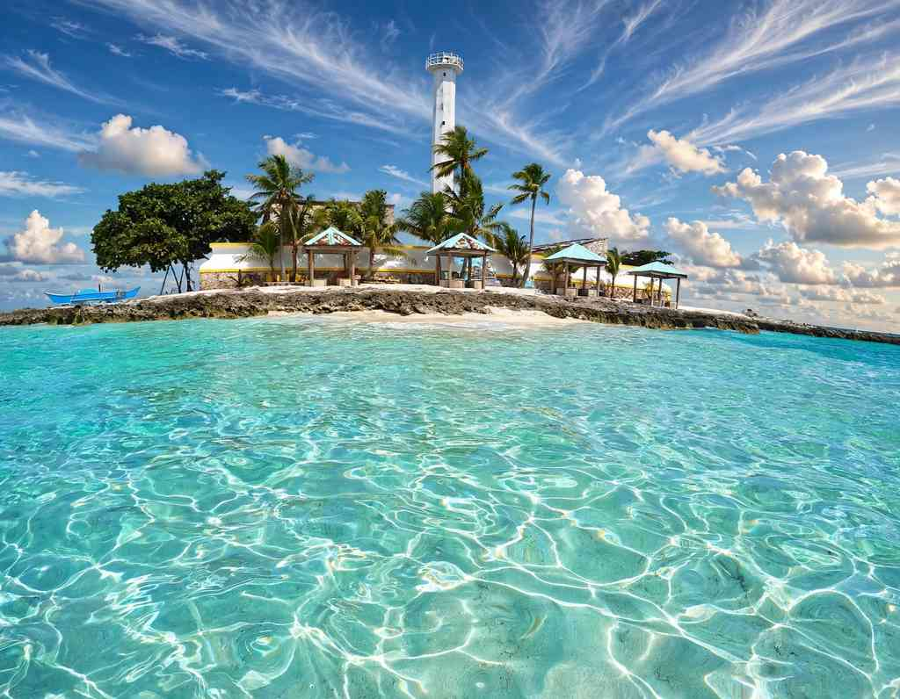

Capitancillo is a speck of coral off Bogo City in northern Cebu with a white lighthouse, a protected marine sanctuary and three recognised dive sites. A visit is a half-day outing: a bus to Bogo, a short boat ride, then a few hours on the sand or in the water. The cost is modest, ₱50 per person to land plus a boat that runs ₱1,500 to ₱5,000 depending on its size.
The islet sits northeast of Cebu Island, a short crossing from the Bogo coast. Bogo is about 100 kilometres up the highway from Cebu City, and the boat ride from the mainland takes 15 to 45 minutes depending on which jump-off you use. The islet itself is tiny, roughly six hectares of land, while the sanctuary around it covers 22 hectares of reef.
Expect very little infrastructure. There are no restaurants or shops and no electricity, only a lighthouse, some rentable huts and a beach. Most people find that is exactly the appeal, and it makes planning the day more important than it would be at a resort island.

The Lighthouse and the Rest of the Islet
The tower is the first thing you see from the boat and the main reason the islet is on maps. A light has stood on Capitancillo since the Spanish period, and the station is recorded as dating to 1905. The original structure no longer stands. The slender white tower there now dates to the 1950s, rises about 25 metres, shows three white flashes every ten seconds, and still serves ships crossing the Camotes Sea. It runs on solar power, and the ruins of older keepers' quarters sit nearby.
Around the lighthouse there is a strip of white sand and a handful of huts that can be rented for the day. The huts are the only ready-made shade, so arrive with your own water, food and a bag for your rubbish.
Where the Name Comes From
Capitancillo is Spanish for "little captain." Two local stories try to explain it. In one, a Spanish captain named Basilio insulted a chieftain, who cursed the ship and turned it to stone, leaving the islet. In the other, an American naval captain nicknamed Cillo ran his vessel aground there during the Second World War. Both are folk accounts rather than documented history, so they make better boat-ride conversation than trip planning.
Snorkelling and Diving
The reef is the real draw. Capitancillo has three recognised dive sites: Ormoc Shoal, Nuñez Shoal and the Southwest Wall. The reef starts shallow and then drops away to somewhere between 25 and 40 metres, which gives snorkellers a protected edge to work along and divers a wall to follow. The southwest side is the stretch most often recommended for snorkelling.
The islet is not a dive base, so sort out your operator and equipment before you cross. A fee of ₱150 per dive is posted for the sanctuary, and a basic diving class is listed at ₱3,000. Ask the Bogo tourism office whether instruction is actually available on your date.
- Photograph the lighthouseThe best frame is from the water as the boat approaches, with the white tower against the open sky.
- Snorkel the southwest wallBring your own mask and fins, and wear a life vest if the current is running.
- Rent a kayakKayaks are listed at ₱150 per hour, a calm way to see the reef from above.
- Take a hut for the dayA hut costs ₱200 and gives your group a place to leave bags and eat out of the sun.
How to Get to Capitancillo From Cebu City
The trip has three legs, and the middle one trips up first-timers. Bogo has several jump-off points, and the city's own listing names the Siocon Bantay Dagat outpost. Others in use are Polambato Port at about 45 minutes by boat, Nailon Wharf at about 30, and Marangog Cove and Odlot Hideaway at roughly 15 to 20. The closer the jump-off, the shorter your time on open water.
Cebu City to the islet
Bogo to Capitancillo
Boat₱1,500–₱5,000Landing fee₱50 eachOpen7 AM–2 PM
-
Step 1
Take a northbound bus to Bogo
Ceres Liner buses from the Cebu North Bus Terminal pass through Bogo on the way to Hagnaya and Maya. Count on three to three and a half hours and a fare of about ₱160 to ₱200. Tell the conductor you are getting off in Bogo, because the main terminal sits on the edge of the city.
-
Step 2
Ride to the jump-off
A tricycle or pedicab from Bogo proper to the Siocon Bantay Dagat outpost takes under half an hour and has been quoted at around ₱25 a head. Driving yourself, take the Cebu North Road and leave the car at the jump-off.
-
Step 3
Book the boat and agree on a return time
A pumpboat carrying up to 15 people is ₱5,000 round trip, and the price does not drop for a smaller group. A small boat for four or five has been offered through the Bantay Dagat office at around ₱1,500. Settle the pick-up time before you step off, since no regular service stops at the islet.
Short on time? The 7 AM to 2 PM hours leave little margin. Leave Cebu City at dawn, or sleep in Bogo and cross first thing.
What a Day Costs
The boat is the big line item, so group size decides everything. Four people on a small boat pay ₱1,500 plus ₱200 in landing fees, about ₱425 each before the bus. A full group of 15 on the big boat pays ₱5,000 plus ₱750, about ₱383 each. Bus fares come on top, and so does any hut, kayak or dive.
When to Go and What the Sea Decides
Time of day
Be on the water by morning
Visiting hours run from 7 AM to 2 PM. With a long bus ride ahead of you, an early start is the difference between a few hours on the islet and none.
Season
December to May is usually easier
The drier months tend to bring gentler seas. The rainy season brings wind and swell that can restrict landings. See the month-by-month guide to Cebu weather before you pick dates.
Weather
Rough seas cancel trips
Boatmen will not cross when the water is rough, and that is the right call. Keep a spare day in your schedule if the trip matters to you.
Bogo After the 2025 Earthquake
Bogo was close to the epicentre of the magnitude 6.9 earthquake of 30 September 2025, and the city is still rebuilding public buildings. Boat trips to Capitancillo have resumed, but conditions on the ground change, so ask your boatman or the tourism office what is open on your date. Accommodation in Bogo is limited. Many travellers day-trip from Cebu City or stay on Bantayan Island instead.
What to Bring
- Cash in small billsBring enough for the landing fee, hut and boat, since there is no ATM on the islet.
- Water and foodThere are no stores, and corkage is not charged.
- Mask, snorkel and finsBring your own, along with a life vest if you are a weak swimmer.
- Reef-safe sunscreen and a hatThe sun is strong over open water and there is little shade beyond the huts.
- A power bankThe islet has no electricity, and signal can be patchy.
- A dry bag and a trash bagThe first protects your phone on the boat. The second brings everything you carried in back out.
Pair It With Another Stop in the North
Capitancillo is short enough that you will have the afternoon to spare. North Cebu rewards a slow trip: Medellin and its Gibitngil Island boats are on the same road, and Daanbantayan is the gateway to Malapascua. Go early, take everything out that you brought in, and leave the reef the way it was.

Comments
No comments yet. Been here recently? Share a tip or ask a question.
Leave a Reply